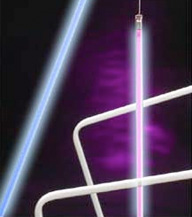
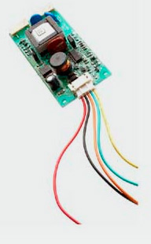
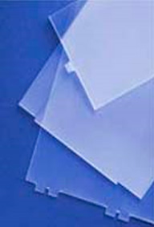
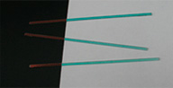
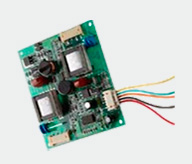

Clio Technologies offers custom-designed, high efficiency backlighting systems and components including light guides for single and dual mode operations; light sources for backlighting; LED strips; LED drivers; high performance CCFLs with specified chromaticity, configuration, and dimming; inverters for CCFLs; and films.
LED Light Sources for Backlighting
Clio Technologies can design and manufacture custom LED light sources to meet your application's requirements. The LED light source and the LED strips can be made for efficient heat dispersion, compact size, color stability, and long life. Clio Technologies has developed an efficient thermal management technology, which uses an isolated metal substrate to minimize the effects of temperature on the color in LEDs.
Drivers for LEDs for High Dimming with Analog and Digital Control
Clio Technologies provides high performance, DC-to-DC converters to drive high voltage LED arrays. The LED driver provides a wide PWM dimming range without the color shift normally associated with LED current dimming. The internal PWM signal achieves digital dimming of up to 3000:1 while analog dimming with 8 bits MCU achieves dimming of 1000:1. The LED Drivers can protect against open circuit, under voltage, soft start, and over temperature conditions.
CCFL Light Sources for Backlighting
 Clio Technologies can design and manufacture CCFLs with high efficiency and long life spans. Because we use only quality materials and production procedures, our CCFL lamps provide on average 10-20% higher brightness than consumer lamps in notebook computers and can be used for very high dimming applications. Our custom lamps use hard glass to maximize the lamps' life spans and operating temperature range. The lifetime of a 2.6mm diameter lamp is over 50,000 hours. Lamps with diameters of 1.8mm to 4 mm are available. The lamps will be fully documented and will be delivered within approximately 2-3 weeks after receiving the purchase orders.
High Dimming Inverters for CCFL

Clio Technologies can provide custom designed and manufactured inverters that match the lamps, offer a high dimming range, and achieve high performance. Inverters can be designed for analog or digital dimming and can be coated or potted for operation at high altitudes.
The inverter/driver units are custom made to satisfy your special requirements, including unique dimensions to fit in user-specified backlight housing. The inverter can be made to achieve a high dimming ratio. Dimming control can be digital (with a push button) or analog (with a potentiometer). Clio Technologies can use a special dimming scheme with hybrid light source, CCFLs for high brightness, and LEDs for very low output brightness, to achieve a very high dimming ratio. Power supply and control for heating can also be included in the inverter/driver unit to warm up the lamps for low temperature operation. Optical and thermal sensors can be incorporated in the inverter/driving unit to provide feedback for thermal and inverter power control.
Optical Films
 Clio Technologies can provide precision cut optical films, adhesive films and other special films to meet unique customer requirements. Special films can be used to expand the viewing angle or eliminate the non-uniformity in LED displays. Beam Angle Expander This film/plate expands the divergent angle of backlights for LCD displays requiring a wide viewing angle. The films/plates can be custom made to increase the viewing angle in x, y or both directions. Active Area Expander This plate expands the viewing area of the backlight for backlight displays that have an extremely small border area.
Microprism Light Guides
This revolutionary Flat Collimator was developed to backlight displays with extremely high efficiency requirements. It sends essentially all input light towards the viewer. The Flat Collimator light guide can be used for dual mode (day/night vision) applications. With the viewing area expanding technology, the Flat Collimator Backlight can essentially illuminate displays from edge to edge.
NVIS Filters
 Clio Technologies provides high quality NVIS filters that satisfy military requirements. The filter reduces long wavelength red and infrared light.
LED Strip
 The custom made LED Strip can be made from an insulated metal substrate for heat management. LED Driver The LED driver can be custom made for high efficiency, compact size, and high dimming ratio.
Backlight System Assembly
Clio Technologies provides backlight assembling services to install enhanced backlighting solutions into your chassis and perform testing and inspection of assembled backlight systems. We also provide a wide range of LED strip and CCFL assemblies. We can provide LED and CCFL assemblies made according to your specification.
Clio Technologies has a design engineering space, comprehensive quality and assurance inspection center, and a Class 100 clean room for the assembly of LCD backlight solutions. We also have a precision machine shop for production of optical components, films, light pipes, and chassis for backlight installation. With our precision machine shop, Clio Technologies can design and manufacture the metal chassis to optimally integrate our backlights into our customers' display systems.